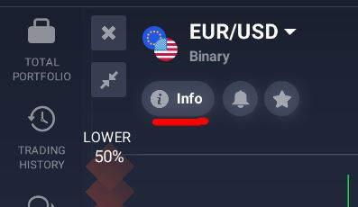
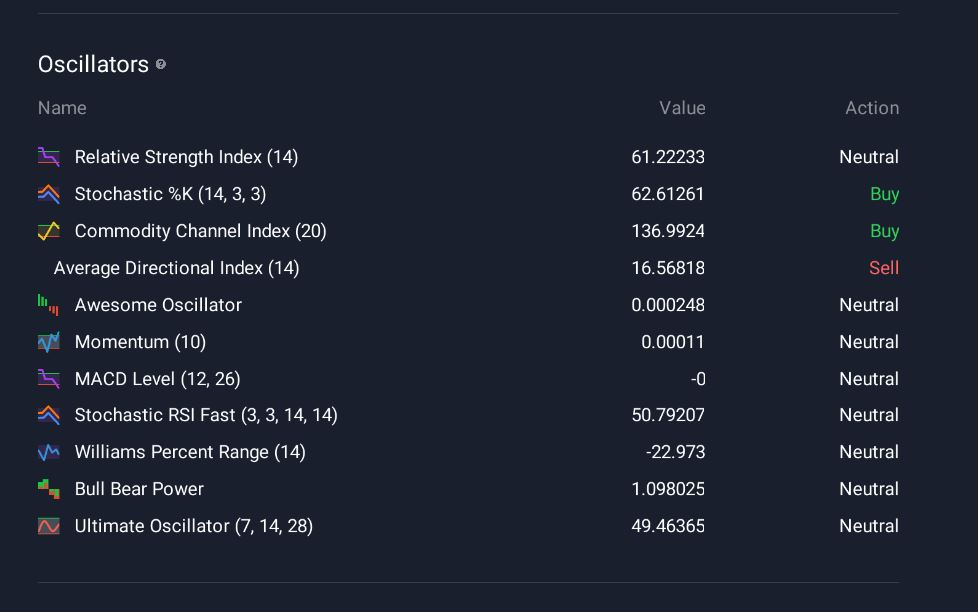

Análisis técnico
Tecnical analysis¶
Está disponible en los assets que puedes comprobar en "asset info":

Si hay una sesión como esta tu puedes obtener los datos
NOTA: Si no hay análisis técnico en el asset que tu quieres, no podrás uarlo

Hay algunos indicadores disponibles
Pivotes¶

Osciladores¶

Promedioss móviles¶
Cómo usar:¶
asset="GBPUSD"
indicators = Iq.get_technical_indicators(asset)
print(indicators)
{
"code": "no_technical_indicator_available",
"message": "Active is not supported: active id 'ACTIVE_ID_PASSED'"
}
NOTA: DEBE ANALIZAR EL CONTENIDO QUE SE IMPRIME
[
{
"action": "hold",
"candle_size": 60,
"group": "OSCILLATORS",
"name": "Relative Strength Index (14)",
"value": 59.168583
},
{
"action": "hold",
"candle_size": 60,
"group": "PIVOTS",
"name": "Classic s3",
"value": 1.057292
}
.....
]